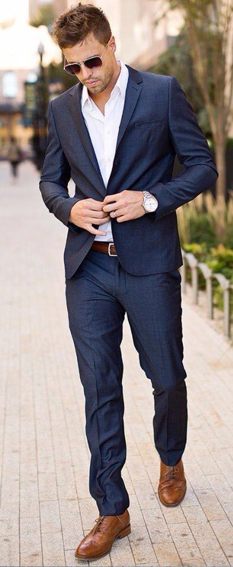
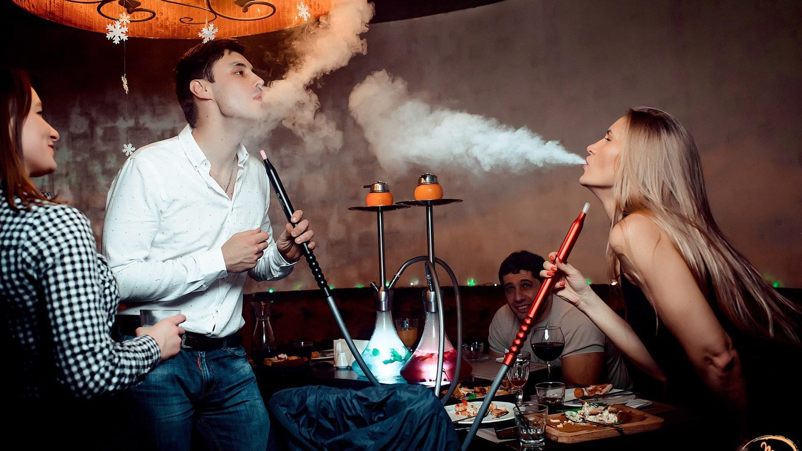

Зачем я работаю
Я буду называть больше стоимость работ. Я буду закрывать больше часов. Я начинаю больше зарабатывать.
За счет воздержания от дешевого дофамина я становлюсь более серьезен. У меня вырастает уровень тестостерона, я становлюсь мужественнее.
Я буду заниматься спортом. Физические нагрузки и длинные прогулки сделают мое тело стройным и подтянутым.
Организовав свой рабочий процесс: называя большие оценки, ограничивая количество задач в работе, отказывая людям - я смогу работать меньшее количество времени, смогу выделять себе свободные вечера и выходные. У меня уже появятся деньги - и я добавлю себе больше занятий в жизни в освободившееся время.
Я буду общаться с людьми более высокого уровня, которые имеют больше денег, красивее выглядят, еще более уверены в себе.
Сейчас я меняюсь. Становлюсь другим человеком. Гораздо увереннее в себе. Гораздо серьезнее себя держу. Я твердый, конкретный. Я меняюсь.
Я буду "выходить в свет", начну посещать новые мероприятия, бывать в новых местах: съезжу в Куликово на покер, побываю на разных дискотеках, схожу в стриптиз-бар, похожу на курсы танцев, найду более закрытые паблики через сайты знакомств и сидение в ВК, буду посещать разные кальянные мероприятия.
Я постоянно увеличиваю доход, зарабатываю больше и больше.
По состоянию на ноябрь-декабрь 2023 мой доход 70.000 рублей. К февралю 2024 я буду зарабатывать 120.000 рублей в месяц. К маю 2023 я буду зарабатывать 150.000 рублей в месяц. К декабрю 2023 я буду зарабатывать 220.000 рублей в месяц.